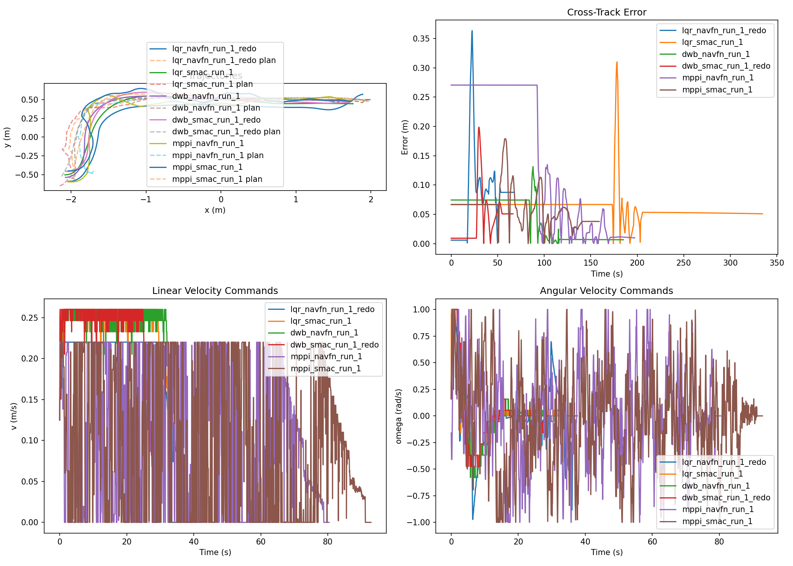
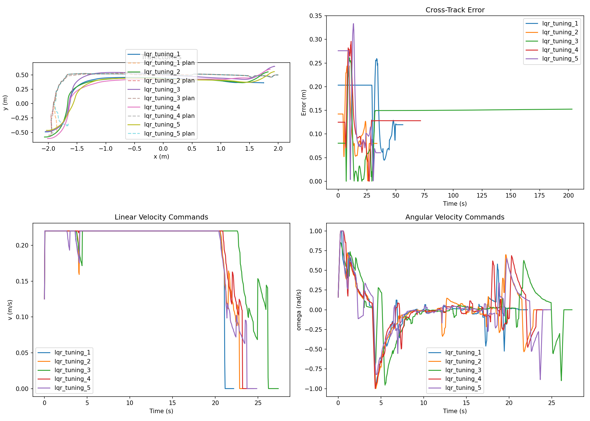

A C++ Linear Quadratic Regulator integrated into the ROS2 navigation
stack,
benchmarked against DWB and MPPI across six controller–planner
configurations.
The LQR controller integrates into the Nav2 stack as a
pluginlib plugin implementing
nav2_core::Controller. The implementation is
deliberately split into two files to keep pure mathematics
separate from ROS2 glue code.
The TurtleBot3 Burger is modeled as a unicycle (Dubins car). LQR is applied in three stages: body-frame error formulation, discrete linearization, and DARE-based gain computation.
State: $\mathbf{x} = [p_x,\; p_y,\; \theta]^\top$ · Control: $\mathbf{u} = [v,\; \omega]^\top$
Rather than computing error in the global frame, we project into the path's local coordinate frame. This ensures the LQR cost meaningfully penalizes lateral (cross-track) and longitudinal deviation separately:
Error vector: $\mathbf{e} = [e_{\text{long}},\; e_{\text{lat}},\; e_\theta]^\top \in \mathbb{R}^3$
Linearizing around $\mathbf{e}=\mathbf{0}$ with $v_{\text{ref}} = 0.2$ m/s, $\omega_{\text{ref}} = 0$, and applying Forward Euler with $\Delta t = 0.05$ s:
Key insight: Because $v_{\text{ref}}$ and $\omega_{\text{ref}} = 0$ are constant, $A_d$ and $B_d$ are constant — DARE is solved once at startup, not every control cycle.
Convergence: $\max|P_{k+1} - P_k| < 10^{-9}$. Typically converges in <100 iterations.
Clamped to TurtleBot3 Burger limits: $v \in [0,\; 0.22]$ m/s, $\omega \in [-2.84,\; 2.84]$ rad/s.
$q_{\text{lateral}} = 3.0$ is intentionally elevated to prioritize tight lateral path-tracking. These are the original specification gains — no tuning was performed.
The initial implementation had strong path-tracking (mean CTE ~0.10 m) but the robot never reached the goal. All six root causes were code defects — the original Q/R gains were never the problem. Each bug is documented from the tuning log.
findClosestPoint() scanned the entire path
every cycle. Near the goal, the curved path looped back toward
earlier segments, causing the closest-point index to snap
backward. The robot would then drive away from the goal
to re-track old waypoints, creating an infinite loop.
last_closest_idx_ — search now
starts from previous index (±2 step lookback for localization
jitter). Reset to 0 on each setPlan().
At constant $v_{\text{ref}} = 0.2$ m/s, the robot overshot the 0.25 m goal tolerance, turned around, overshot again, and oscillated indefinitely around the goal without ever triggering the goal checker.
goal_slowdown_radius: 1.0 m. When
remaining path length < 1.0 m, reference speed scales
linearly to zero with a 5% floor to prevent stalling before the
goal checker triggers.
The goal_checker parameter passed to
computeVelocityCommands() was silently discarded.
The controller kept commanding non-zero velocities even when
Nav2 had internally satisfied the goal condition.
goal_checker->isGoalReached() check
at the top of each control cycle. Returns zero velocity
immediately when triggered.
NavFn outputs path poses with identity quaternion $(0,0,0,1)$ — yaw = 0 everywhere. With $\theta_{\text{ref}} = 0$ at all waypoints, the body-frame error was computed in a fixed global frame instead of the local path frame, corrupting both $e_{\text{long}}$ and $e_{\text{lat}}$.
computePathHeading() — detects identity
quaternions and falls back to atan2(dy, dx) between
adjacent waypoints.
required_movement_radius: 0.5 m with
movement_time_allowance: 10 s caused Nav2 to abort
the navigation task during the fine approach phase, when the
robot was making small adjustments within ~0.25 m of the goal.
required_movement_radius: 0.25 m,
movement_time_allowance: 20 s.
global_plan_.poses.size() - 1 on a single-pose path
underflows size_t from 0 to a huge positive integer
(~2⁶⁴), causing out-of-bounds memory access and undefined
behavior on single-waypoint paths.
if (global_plan_.poses.size() < 2) return
closest_idx;
at the top of findLookaheadPoint().
Three experiments spanning six weeks. The controller went from broken to production-ready without touching a single Q or R value.
[controller_server]: Reached the goal! and
[bt_navigator]: Goal succeeded confirmed in logs.
Commits: cc55b0a, 1d4a366, f32b14e, fd2ccde.
All runs: same Gazebo world (turtlebot3_world), same
start (default spawn), same goal $(x=2.0,\;y=0.5)$. Metrics computed
from rosbag recordings using odometry at ~20 Hz.
| Configuration | Mean CTE (m) | Max CTE (m) | Std CTE | dv/dt | dω/dt | Time (s) | Goal |
|---|---|---|---|---|---|---|---|
| LQR + NavFn | 0.083 m | 0.363 m | 0.072 m | 0.110 | 0.939 | 67.9 s | ✓ |
| LQR + Smac 2D | 0.061 m | 0.310 m | 0.024 m | — | — | 334.6 s | ✓ |
| DWB + NavFn | 0.042 m | 0.131 m | 0.035 m | 0.219 | 0.876 | 185.1 s | ✓ |
| DWB + Smac 2D | 0.042 m | 0.199 m | 0.042 m | 0.277 | 0.886 | 66.4 s | ✓ |
| MPPI + NavFn | 0.146 m | 0.270 m | 0.121 m | 1.088 | 2.683 | 197.2 s | ✓ |
| MPPI + Smac 2D | 0.060 m | 0.179 m | 0.030 m | 1.029 | — | 159.1 s | ✓ |
Orange rows = LQR configurations. Bold = per-column best. Dashes = anomalous smoothness values due to cmd_vel timestamp artifacts excluded from comparison.
LQR + NavFn at 67.9 s, edging out DWB + Smac (66.4 s). Both are 2–3× faster than DWB + NavFn (185 s).
DWB wins at 0.042 m. LQR + NavFn (0.083 m) is competitive; LQR + Smac achieves 0.061 m with higher consistency (std 0.024 m).
LQR dominates — dv/dt 0.110 vs MPPI's 1.088. MPPI sends 2–3× more cmd_vel messages, causing jerky, high-frequency corrections.
LQR + Smac has the lowest CTE standard deviation (0.024 m) of all six configurations, indicating highly repeatable tracking.
| Run | Mean CTE (m) | Max CTE (m) | Std CTE | dv/dt | dω/dt | Time (s) | Goal |
|---|---|---|---|---|---|---|---|
| lqr_tuning_1 | 0.159 | 0.260 | 0.060 | 0.159 | 1.006 | 56.2 | ✓ |
| lqr_tuning_2 | 0.109 | 0.244 | 0.054 | 0.148 | 0.971 | 33.7 | ✓ |
| lqr_tuning_3 | 0.139 | 0.261 | 0.040 | 0.164 | 1.009 | 203.2 * | ✓ |
| lqr_tuning_4 | 0.126 | 0.296 | 0.044 | 0.146 | 1.063 | 71.6 | ✓ |
| lqr_tuning_5 | 0.146 | 0.334 | 0.096 | 0.145 | 1.128 | 36.8 | ✓ |
| Mean | 0.136 | 0.279 | 0.059 | 0.152 | 1.035 | ~49 s | 5/5 |
*Run 3 bag recording stopped late; actual navigation time was comparable to other runs.

Fig. 1: 6-combo benchmark comparison. Top-left: robot trajectory overlays with planned paths. Top-right: cross-track error over time. Bottom-left: linear velocity commands. Bottom-right: angular velocity commands. LQR+NavFn (blue) demonstrates the cleanest, fastest trajectory. MPPI configurations show significantly noisier velocity profiles.

Fig. 2: 5-run LQR reliability validation (same gains, same start/goal, 5 independent trials). Consistent CTE profiles and smooth velocity commands confirm the controller is repeatable. Run 3 (green, extended time axis) reflects a late bag-stop, not slow navigation.
Six simulation recordings from the benchmark campaign. Each shows
the TurtleBot3 Burger navigating from default spawn to goal $(2.0,
0.5)$ in turtlebot3_world. All six configurations
successfully reach the goal.
DWB achieved lower mean CTE (0.042 m vs 0.083 m for LQR+NavFn) but at a significant time cost — LQR+NavFn was 2.7× faster (67.9 s vs 185.1 s). Smoothness was comparable: both controllers exhibit dv/dt below 0.28 and dω/dt below 0.94. The closest DWB competitor, DWB+Smac, nearly matched LQR on speed (66.4 s) while achieving lower CTE — suggesting that planner choice matters significantly.
LQR clearly outperformed MPPI on every metric. MPPI+NavFn had the worst mean CTE (0.146 m), a high time cost (197.2 s), and the most aggressive velocity commands (dv/dt 1.09, dω/dt 2.68). MPPI's sampling-based nature generated 2–3× more cmd_vel messages than LQR or DWB, causing frequent small corrections that accumulated into poor smoothness scores. This is consistent with the MPPI assignment (A2) which describes how the stochastic rollout strategy trades off optimality for computational tractability.
Smac 2D generally produces shorter, more geometrically direct paths, which contributed to faster runs for DWB. The LQR+Smac run was unexpectedly slow (334.6 s), likely due to a complex replanning scenario in that trial — a limitation of single-run evaluation without statistical replication.
This project directly builds on the course assignments. The Dubins car model from A1/A2, linearized in A3's LQR assignment, is the same model used here in the Nav2 plugin. The DARE-based steady-state gain is equivalent to the infinite-horizon formulation from Tedrake's Underactuated Robotics Ch. 8. MPPI, studied in A2, serves as our primary stochastic baseline. AMCL localization, used throughout the Nav2 stack, mirrors the MCL implementation from A1 Q3.
No error bars or confidence intervals. The 5-run LQR validation showed CTE ranging 0.109–0.159 m, so single-run numbers carry uncertainty.
Real-world deployment would require re-tuning for wheel slip, encoder noise, and AMCL uncertainty on physical LiDAR data.
All runs used the same start/goal pair. Performance may differ on longer routes, sharp turns, or obstacle-dense environments.
LQR+Smac and MPPI+Smac dω/dt values were anomalous due to cmd_vel timestamp issues in recording and were excluded.
@misc{oh2026lqr,
title = {{LQR} as a {Nav2} Controller Plugin for {TurtleBot3} Path Tracking},
author = {Oh, Tommy and Aggarwal, Ansh and Senteu, Daniel and Wu, JunHang},
year = {2026},
institution = {Simon Fraser University},
note = {{CMPT 720} Course Project, Spring 2026},
url = {https://github.com/TommyOh0428/LQR-Controller}
}